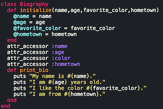

Alan Alcesto: Let's Talk Tech


Ruby is all about object oriented programming. With that being said, classes are a first-class objects. Ruby classes allow you to bundle up Ruby methods, so you can create many objects that operate the same way. Classes also allow you to add methods to individual objects. Classes work like an overarching object with multiple attributes. For example a person would be are overarching object and the attributes can be hair color, height, ethnicity, shoe size, eye color, etc.
First, lets talk about how classes are made. Classes are defined by the word "class". The word class will come before the class name. The first letter of the class name must always be capitalized. In our example below we have the class "Biography". First we must initialize our arguments. This will let our program know that we are focusing on these arguments. This is done with an instance method within our class. In our example we have four arguments: name, age, favorite color, and hometown. Notice that within our initialized method we set our arguments equal to the same thing, but with an @ sign in front of it. This will allow are arguments to become instance variables. Instance variables allow us to use these variables in multiple methods within a class. Instance variables differ from local variables, as local variables can can only be used within the method they are defined. Within our other instance method we are printing out the information gathered into strings for our bio.

Rather than writing out methods for each argument, we are using "attr_accessor" with will let our users read and write the arguments. This will keep our code concise and clear. I hope our little lesson was helpful in learning about classes, instance variables, and instance methods!